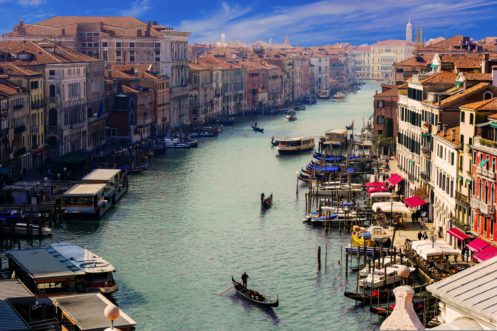
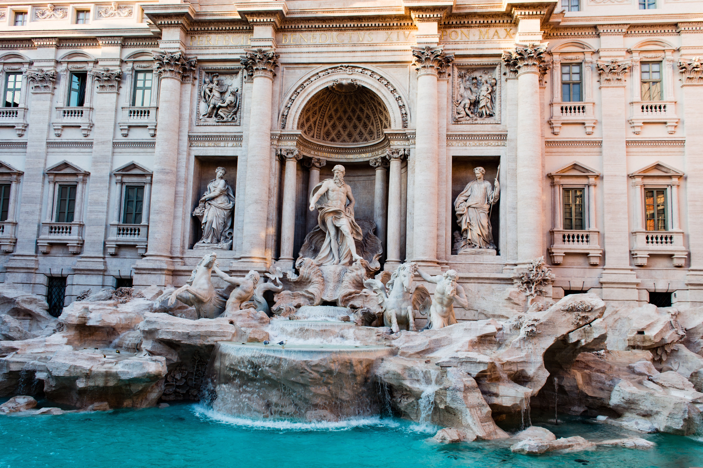

Commencez votre évasion par la ville flottante. Après un transfert privé en bateau-taxi, laissez-vous charmer par l'élégance de la Place Saint-Marc et l'histoire du Pont du Rialto. La journée se termine en douceur par une balade privée en gondole au moment où le soleil embrase les façades des palais vénitiens.

Cap sur la capitale impériale en train à grande vitesse. Accompagné d'un guide expert, vous plongerez dans l'époque des gladiateurs au Colisée et au Forum Romain. En fin de journée, flânez dans les ruelles baroques jusqu'à la Fontaine de Trevi pour y jeter une pièce, promesse d'un futur retour à Rome.

Direction le Nord pour une parenthèse enchantée au bord du lac le plus célèbre d'Italie. À bord d'un bateau Riva privatisé, vous admirerez les villas de stars et les jardins botaniques suspendus. Un arrêt au village de Bellagio vous permettra de découvrir l'artisanat local et la gastronomie lombarde face aux Alpes.

Terminez votre séjour en apothéose sur la Côte Amalfitaine. Positano vous accueille avec ses maisons verticales aux couleurs pastel et ses eaux turquoise. Entre shopping de luxe, dégustation de Limoncello artisanal et détente sur la plage de Grande, vivez l'essence même de l'été italien avant votre départ.
| Option de Séjour | Hébergement (Hôtels 4★) | Inclus | Prix / Pers. |
|---|---|---|---|
| Pack Évasion | Hôtels 4★ (Charme & Confort) | Vols + Trains + Petit-déjeuner | 16 500 MAD |
| Pack Signature | Hôtels 4★ Sup (Vue Monument) | Demi-pension + Guides + Activités | 22 900 MAD |
| Pack Excellence | Palaces & Hôtels 5★ (Suites Junior) | Pension Complète + Chauffeur Privé + Conciergerie VIP 24/7 | 31 500 MAD |